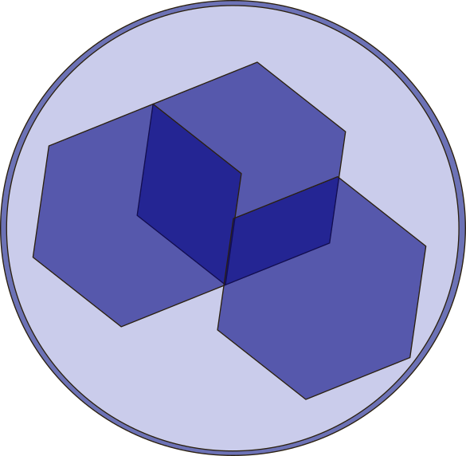

Initializing Sovereign Witness...
Hello BeeBee, I'm starting my life-strap story.
I am listening. How does your rhythm feel today?
Capacity: [| | | | | | | | | |] 80%
Heli Projection: Active
Besearch Progress: Phase 2